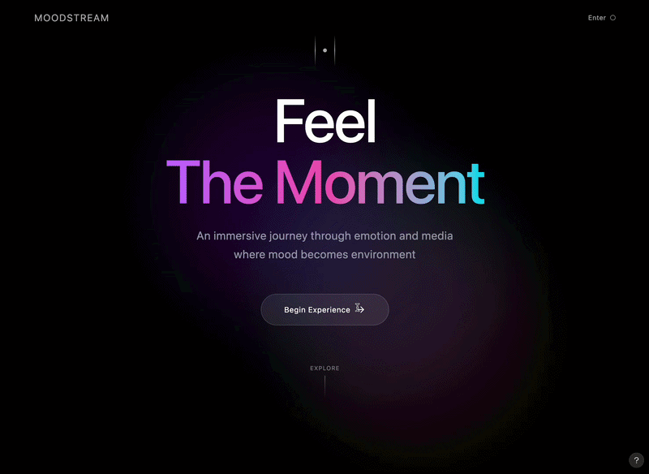
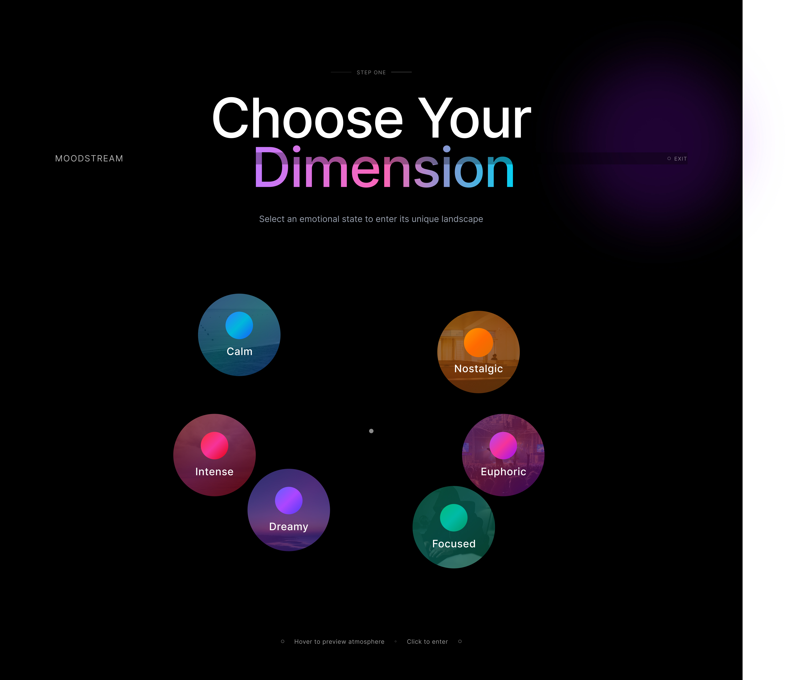
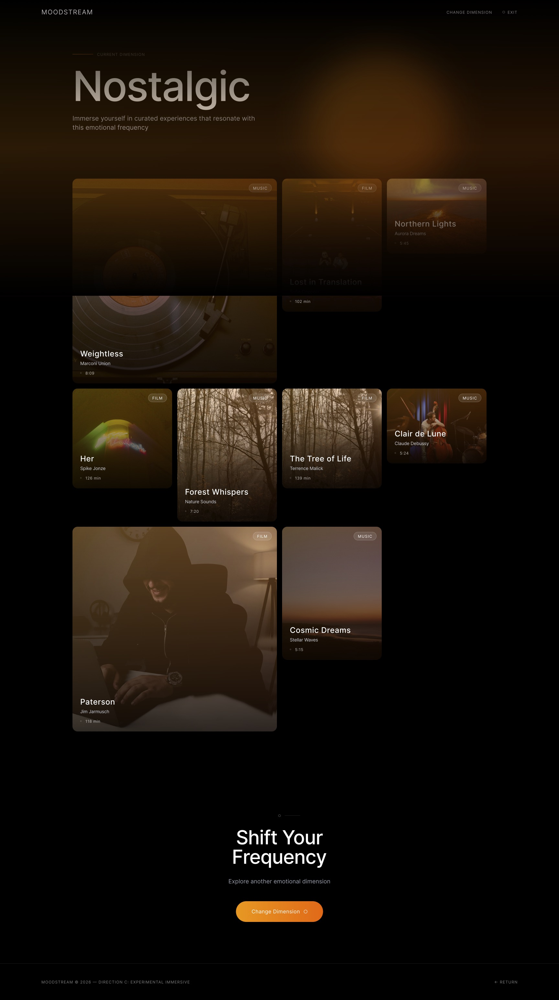

MoodStream
Reimagining media discovery through emotion

Reimagining media discovery through emotion

Interactive walkthrough demonstrating the emotion-driven discovery flow.
MoodStream is a conceptual web platform that reimagines media discovery through emotion rather than traditional search or genre-based navigation. Instead of browsing by artist, title, or category, users explore music and film based on how they want to feel.
The platform introduces an immersive browsing experience where moods such as calm, euphoric, nostalgic, or intense guide content recommendations across both audio and video. The goal is to create a more intuitive and emotionally resonant way to discover media while encouraging exploration beyond algorithm-driven feeds.
Most streaming platforms organise content through genres, algorithms, search queries, and popularity rankings. However, users often begin with a feeling rather than a specific title.
"I want something calming while working."
"I feel nostalgic tonight."
"I want something intense and cinematic."
Existing platforms require users to translate emotions into genres or keywords, which creates friction in discovery. The challenge was to design a system that makes emotions navigable while still providing clear structure, usability, and scalable product architecture.
I explored how current streaming platforms structure discovery and identified a gap between how users feel and how platforms ask them to search. Many people know the mood they want, but not necessarily the title, genre, or artist.
To make emotional browsing more usable, I created a mood taxonomy based on emotional tone and energy level. This made it possible to organise moods such as calm, nostalgic, euphoric, and intense into a scalable system for both music and film discovery.
I explored multiple visual directions, ranging from more minimal streaming aesthetics to more expressive and immersive interfaces. The final direction focused on a spatial, atmospheric approach that supported emotional exploration while still keeping the experience usable and structured.
A design system was built to support the concept across screens and states. This included emotion-led colour tokens, layered backgrounds, reusable cards, and layout principles that support both immersion and readability.
The final concept included a landing experience, mood selection flow, discovery results, and supporting interface states that help users move fluidly between emotional intent and curated content.

Immersive landing page introducing the emotion-driven discovery experience.

Users explore media through emotional states rather than traditional genres or categories.

Curated media recommendations based on selected mood and emotional direction.

Scroll to explore the full design system ↕
Colour tokens, atmospheric layers, and reusable components supporting emotion-driven navigation.
MoodStream demonstrates how emotional intent can reshape media discovery by replacing traditional search-driven patterns with a more intuitive and immersive experience.
The final concept presents a structured yet expressive platform where users can browse content through feeling rather than function alone. It highlights how abstract emotional experiences can be translated into a usable digital system through thoughtful information architecture, visual design, and interaction design.